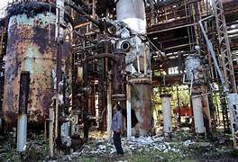
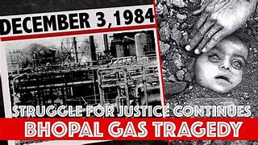

Kesari
My First Newspaper

Bhopal Gas Tragedy
-
incidents in India's history, unfolded on the night of December 2-3, 1984, at the Union Carbide pesticide plant in Bhopal, Madhya Pradesh. This catastrophic event left an indelible mark on the collective memory of the nation.
-
The disaster originated in a tank containing methyl isocyanate (MIC), a highly toxic gas used in the production of pesticides. Due to a combination of factors, including inadequate safety measures, maintenance negligence, and cost-cutting measures, water entered the MIC storage tank.This triggered a violent chemical reaction, resulting in the release of a lethal gas cloud into the surrounding neighborhoods.T he immediate impact was catastrophic.

-
The dense cloud of toxic gas, primarily composed of MIC, spread through the city, affecting a densely populated area. Thousands of residents were exposed to the deadly fumes as they slept, leading to widespread panic and chaos. The gas caused severe respiratory and neurological problems, leading to immediate casualties.
-
The death toll from the Bhopal gas tragedy is staggering. Official figures estimate over 3,800 immediate deaths, but some reports suggest the numbers could be much higher, with the long-term death toll reaching tens of thousands due to related illnesses. The incident not only claimed lives but also left countless survivors with chronic health issues, including respiratory disorders, neurological complications, and birth defects.
-
The aftermath of the tragedy revealed the inadequacies in the safety protocols of the industrial complex. Investigations highlighted poor maintenance practices, insufficient safety measures, and a lack of emergency preparedness. The tragedy raised significant questions about corporate responsibility, governmental oversight, and the ethics of multinational corporations operating in developing countries.
-
Union Carbide Corporation, the American company that owned the Bhopal plant, faced severe criticism for its role in the disaster. Legal battles ensued, and in 1989, Union Carbide settled with the Indian government for $470 million—a fraction of the compensation sought. The settlement, however, sparked further debates about justice, accountability, and the power dynamics between developed and developing nations.
-
The Bhopal gas tragedy had enduring environmental implications. The soil and groundwater in and around the plant were contaminated with toxic chemicals, affecting the health and livelihoods of local communities for years to come. Efforts to clean up the site and address the environmental consequences have been ongoing, but the scars left by the disaster are still visible.
-
T he legacy of the Bhopal gas tragedy extends beyond the immediate incident. It prompted a reevaluation of industrial safety standards in India and globally, leading to increased awareness about the potential dangers associated with chemical manufacturing. The incident also fueled activism and advocacy for corporate accountability and the rights of victims of industrial disasters.
-
conclusion, the Bhopal gas tragedy remains a haunting chapter in India's history, serving as a stark reminder of the human and environmental costs of industrial negligence. The incident triggered widespread changes in safety regulations, legal frameworks, and corporate responsibility practices, influencing discussions on ethical business practices and the protection of human rights in the industrial sector.